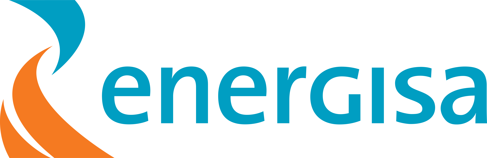

energisa
Juntos até o fim do ano
2026
Faltam
55
dias
para mostrar a força do nosso time!
“
Pensamento do dia
O que construímos juntos faz a diferença.
Uma inspiração para hoje.
Bom
dia
, time!
Que hoje seja um dia de novas conquistas.
Data de teste
Horário
Simular
Repetir saudação
Simular retorno (5,5s)
+1 dia
Tempo real